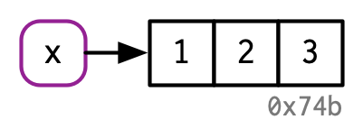

Memory
David Gerard
2021-12-20
Learning Objectives
- Names/Values
- Copy-on-modify
- Modify-by-reference
- Chapter 2 from Advanced R
- These lecture notes are mostly taken straight out of Hadley’s book. Many thanks for making my life easier.
- His images, which I use here, are licensed under

Names and Values
Computer Memory is information (like numbers or strings) that is for immediate use. When you put information there, it is located at some “address” on your computer, and you can retrieve it from that address.
The following puts the vector
c(1,2,3)in memory, and binds the namexto itx <- c(1, 2, 3)
The function
lobstr::obj_addr()let’s us see the address of this object.lobstr::obj_addr(x)## [1] "0x55b11bfab9a8"When you assign
xto a new variable namey, it makes a new name that points to the same object asx.y <- x
lobstr::obj_addr(y)## [1] "0x55b11bfab9a8"If you modify
y, then it will make a copy of object 0x55b11bfab9a8 and pointyto that new object. This is called copy-on-modifyy[[3]] <- 4
lobstr::obj_addr(y)## [1] "0x55b11c27e048"Copy-on-modify exists so that
xdoes not change when you changey.x## [1] 1 2 3You can use
tracemem()to track whenever an object is copied.x <- c(1, 2, 3) tracemem(x)## [1] "<0x55b11acf1a48>"y <- x y[[3]] <- 4 ## copy made## tracemem[0x55b11acf1a48 -> 0x55b11be324e8]: eval eval withVisible withCallingHandlers handle timing_fn evaluate_call <Anonymous> evaluate in_dir eng_r block_exec call_block process_group.block process_group withCallingHandlers process_file <Anonymous> <Anonymous> withCallingHandlers suppressMessages render_one FUN lapply sapply <Anonymous> <Anonymous>y[[5]] <- 1 ## no copy made, y modifiedNote:
tracemem()is connected to the object (here 0x55b11acf1a48), not the namex. So the following will not show a copy-on-modify because we changed the binding of the namex.x <- c(1, 2, 3) tracemem(x)## [1] "<0x55b11bed8a28>"x <- c(4, 5) y <- x y[[2]] <- 6Note:
tracemem()will give you weird results if you use it inside of RStudio. That’s because the Environment pane makes references to objects.Name
ainside function points to same objectx <- c(1, 2, 3) tracemem(x)## [1] "<0x55b11c2b6a58>"f <- function(a) { return(a) } z <- f(x) ## no copy made
and
xandznow point to same object
Exercise: When does the address of
xchange? Usecat()andlobstr::obj_addr()to verify your answer. Doestracemem()help you here? Why are why not?x <- c() for (i in 1:10) { x[[i]] <- i }Exercise: When does the address of
xchange? Usecat()andlobstr::obj_addr()to verify your answer.x <- rep(x = NA_real_, length.out = 10) for (i in 1:10) { x[[i]] <- i }Exercise: When does the address of
xchange? Usecat()andlobstr::obj_addr()to verify your answer.x <- vector(mode = "numeric", length = 10) for (i in 1:10) { x[[i]] <- i }Understanding when an object is copied is important for performance. Making copies can be expensive if you are doing it a lot (like in a for-loop), making your code run much slower.
Lists and Data Frames
Recall that a list is a vector that can have elements of any type.
To do this, list’s name points to a vector of references, and these point to the objects.
l1 <- list(1, 2, 3)
Copy on modify for a list only copies the references, so is much more memory efficient. This is called a shallow copy.
l2 <- l1
l2[[3]] <- 4
lobstr::ref()allows you to see the location of each component of a list.lobstr::ref(l1, l2)## █ [1:0x55b11924d9e8] <list> ## ├─[2:0x55b11be506e8] <dbl> ## ├─[3:0x55b11be506b0] <dbl> ## └─[4:0x55b11be50678] <dbl> ## ## █ [5:0x55b11ab11eb8] <list> ## ├─[2:0x55b11be506e8] ## ├─[3:0x55b11be506b0] ## └─[6:0x55b11c2d0600] <dbl>- Notice that the lists are at different addresses, the first two objects of each list are at the same address, but the third object of each list are at different addresses.
Data frames are lists of vectors (the columns)
d1 <- data.frame(x = c(1, 5, 6), y = c(2, 4, 3))
Modify a column, then only that column is copied and modified
d2 <- d1 d2[, 2] <- d2[, 2] * 2
lobstr::ref(d1, d2)## █ [1:0x55b1196c6548] <df[,2]> ## ├─x = [2:0x55b1195e5d28] <dbl> ## └─y = [3:0x55b1195e5d78] <dbl> ## ## █ [4:0x55b11981bdd8] <df[,2]> ## ├─x = [2:0x55b1195e5d28] ## └─y = [5:0x55b11ab5ef58] <dbl>Modify a row, then the entire data frame is copied (much less efficient).
d3 <- d1 d3[1, ] <- d3[1, ] * 3
lobstr::ref(d1, d3)## █ [1:0x55b1196c6548] <df[,2]> ## ├─x = [2:0x55b1195e5d28] <dbl> ## └─y = [3:0x55b1195e5d78] <dbl> ## ## █ [4:0x55b11a76a468] <df[,2]> ## ├─x = [5:0x55b11bed6388] <dbl> ## └─y = [6:0x55b11bed6338] <dbl>
Character Vectors
A character vector is a vector of references to a global string pool.
x <- c("a", "a", "abc", "d")
But Hadley usually writes this as

Use
lobstr::ref()to show these references.lobstr::ref(x, character = TRUE)## █ [1:0x55b11c2d3898] <chr> ## ├─[2:0x55b11611c0e8] <string: "a"> ## ├─[2:0x55b11611c0e8] ## ├─[3:0x55b11b0e4c90] <string: "abc"> ## └─[4:0x55b1162d16f0] <string: "d">Exercise: Why is
xcopied here? (it is only copied twice if you use R studio)x <- c(1L, 2L, 3L) tracemem(x)## [1] "<0x55b11aa95eb8>"x[[3]] <- 4## tracemem[0x55b11aa95eb8 -> 0x55b11aadee08]: eval eval withVisible withCallingHandlers handle timing_fn evaluate_call <Anonymous> evaluate in_dir eng_r block_exec call_block process_group.block process_group withCallingHandlers process_file <Anonymous> <Anonymous> withCallingHandlers suppressMessages render_one FUN lapply sapply <Anonymous> <Anonymous> ## tracemem[0x55b11aadee08 -> 0x55b11ab2edd8]: eval eval withVisible withCallingHandlers handle timing_fn evaluate_call <Anonymous> evaluate in_dir eng_r block_exec call_block process_group.block process_group withCallingHandlers process_file <Anonymous> <Anonymous> withCallingHandlers suppressMessages render_one FUN lapply sapply <Anonymous> <Anonymous>
New Functions
tracemem(): Tracks an object so that a message is printed whenever it is copied.untracemem(): Untracks an object.lobstr::ref(): Display a tree of object addresses.lobstr::obj_addr(): Gives the address (in memory) of an object that a name points to.lobstr::obj_size(): Gives the size (in memory) of an object.

This work is licensed under a Creative Commons Attribution-NonCommercial 4.0 International License.